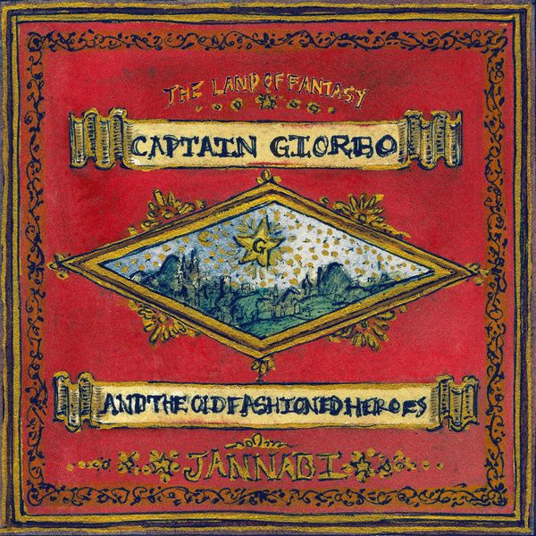

외딴섬 로맨틱
어느 외딴섬 로맨틱을
우리 꿈꾸다 떠내려 왔나
때마침 노을빛이 아름답더니
캄캄한 밤이 오더군
이대로 이대로
더 길 잃어도 난 좋아
노를 저으면 그 소릴 난 들을래
쏟아지는 달빛에
오 살결을 그을리고
먼 옛날의 뱃사람을 닮아볼래 그 사랑을
나는 처음부터 다 알고 있었지
거긴 그 무엇도 없다는 것을
그래 넌 두 눈으로 꼭 봐야만 믿잖아
기꺼이 함께 가주지
이대로 이대로
더 길 잃어도 난 좋아
노를 저으면 그 소릴 난 들을래
쏟아지는 달빛에
오 살결을 그을리고
먼 옛날의 뱃사람을 닮아볼래
사랑은 바다 건너 피는 꽃이 아니래
조그만 쪽배에로
파도는 밑줄 긋고
먼 훗날 그 언젠가
돌아가자고 말하면
너는 웃다 고갤 끄덕여줘
참 아름다운 한때야
오 그 노래를 들려주렴
귓가에 피어날 사랑 노래를
